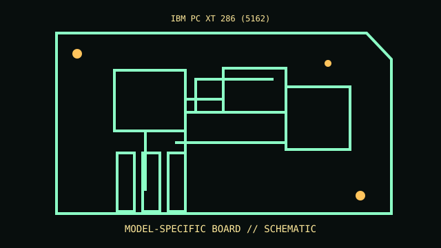

[ MODEL-SPECIFIC COMPONENT // MOTHERBOARDS ]
IBM PC XT 286 (5162)
A sourced record of one model and its documented revision-specific behavior. Similar model numbers and later board spins are distinct products.

IDENTIFY THE PCB FIRST: Record silkscreen, assembly revision, product suffix and firmware string. Use revision-matched manuals and support lists; verify against the physical board.
Documented specifications
| Exact model / revision | IBM PC XT 286 (5162) |
|---|---|
| Socket / processor | Intel 80286 at 6 MHz; follow 5162-specific technical reference. |
| Chipset / architecture | IBM XT286 system-board logic; consult IBM 68X2537, not 5170 AT documentation. |
| Memory | Planar memory and expansion configuration vary; verify assembly and fitted RAM against technical reference. |
| Form factor | IBM 5162 proprietary XT286 planar/chassis; not ATX. |
| I/O / expansion | Expansion and interfaces vary by IBM 5162 configuration; consult board diagrams. |
| Firmware / boot compatibility | IBM XT286 ROM BIOS; planar/ROM assembly and adapter ROMs affect startup. |
Compatibility and revision pitfalls
Do not confuse 5162 XT286 with 5160 XT or 5170 AT. Match assembly/ROM labels, board revision and slot type against 68X2537; never substitute a 5170 BIOS.
Before substitution, check exact CPU/SoC support, minimum BIOS/bootloader, memory population, power connectors and chassis requirements. Matching socket or connector alone does not prove compatibility.
Repair and preservation notes
Photograph planar assembly, ROM labels, switch positions, memory and wiring. Check battery leakage, corrosion, capacitors and PSU rails before power; preserve firmware and document repairs.
Record provenance, labels, firmware and test conditions. Photograph traces, jumpers and cable routing before repair or cleaning.
Sources & further reading
- IBM PC XT 286 Technical Reference 68X2537Exact IBM 5162 model technical reference.
- IBM XT archive — PCjsComparative 5160 material only; not a substitute for 5162 documentation.
Manufacturer manuals, CPU lists and archived technical references form the basis of this record. Revision-specific documents take precedence over family summaries.